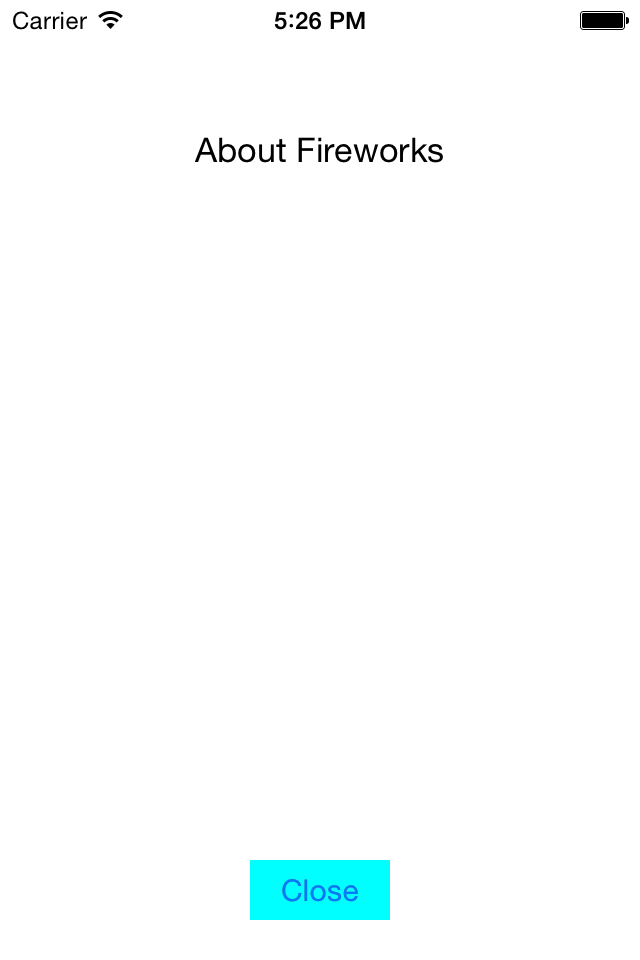

Duration
15 minutes
Goals
The primary goal of this lab will be to add a second View Controller to the storyboard design surface and display it programmatically.
Required assets
This lab is a continuation of the previous exercise. You may use your project from exercise 03 or open the completed project in the Part 03 Resources folder. There is a completed version of the exercise in the Part 04 Resources folder if you'd like to compare your solution when you are finished.
Challenge
Add an About screen:
- Open Main.storyboard.
- Add a new View Controller to the design surface.
- Set the View Controller's class to AboutViewController.
- Set the View Controller's storyboard Id to AboutViewController.
- Add an info button to the original view controller and name it buttonAbout.
- When the About button is clicked, use the InstantiateViewController method to create the About screen and then display it using PresentViewController.
- Add a button labeled close to the About view controller.
- When the close button is clicked, call DismissViewController to close the About screen.
Steps
Below are the step-by-step instructions to implement the exercise.
Add an About View Controller
- Open Main.Storyboard.
- Search for View Controller in the Toolbox and add an empty View Controller to your storyboard design surface.
- Select the new View Controller by clicking on the grey bar.
- In the Properties pane under Identity, set the Class field to AboutViewController. Notice that it creates two new files in your project.
- Set the Storyboard ID field to AboutViewController so we can instantiate the new screen programmatically.
- Add some text to your About screen using a label or a text view.
Add an About button
- Search for Button in the Toolbox and drag a new button to the upper right corner of your original View Controller (not About).
- Select the button, and in the properties pane, change its Type to Info Light.
- Set the button's name to buttonAbout.
- Optionally you can use the Add Recommended constraints toolbar button to add constraints to the new button.

Show the About screen
- Double-click on the new button to add an event handler method and delete the default throw exception code.
- In the new method, instantiate the About screen using the
Storyboard.InstantiateViewControllermethod. - Then display the About screen using the
PresentViewControllermethod.
Dismiss the About screen
Our About screen is being presented modally and we currently don't have any way to dismiss it.
- Open Main.Storyboard and add a button to the bottom of the About View Controller.
- Change the button text to Close and name the button buttonClose.
- Wire up the
TouchUpInsideEvent Handler using any of the techniques from the previous exercise. - In the body of the Event Handler method, call
DismissViewController. The first parameter specifies if the View Controller should animate when it's dismissed, the second allows you to specify an Action to be called once the View Controller is dismissed, this can be set tonull.
Summary
In this lab you created a second screen using the Xamarin.iOS designer, and both displayed and dismissed it programmatically.